Whether you're a one-person operation or running a full press box crew, there's a tool for the job. Professional tools for PA announcers, DJs, and game-day staff — rosters, rundowns, audio, and sponsor reads, all in one place.
All-in-one
Complete toolkits for solo press box operators — plan during the week, then hit "Go Live" and run game day without switching apps.

Built for solo operators who do it all. Press Box PRO combines roster management, sponsor tracking, audio playback, and live rundown execution into a single, powerful dashboard. Plan your game during the week, then hit "Go Live" and run the show without switching apps.
Perfect for: Seasoned announcers, game-day DJs, and solo operators who run the whole show and want every tool in one dashboard.
A simpler, faster toolkit built for solo operators. Press Box LITE lets you quickly create a game rundown, upload rosters and audio, and get the information you need to run the show without switching apps. Built for fast setup and live execution on game day.
Perfect for: Athletic directors, volunteer announcers, booster club parents, and anyone who wears multiple hats on game day.
Prefer individual tools?
Each tool stands on its own — use one, or combine them to fit how your press box runs.

A streamlined interface built for the announcer. Create and manage game-day rundowns organized by phase — Pre-Game, First Half, Halftime, and beyond. See your announcements, sponsor reads, and action cues in a clean, scrollable list. Check off tasks as you go. Never miss a beat.
Features: Phase-based task organization, announcement scripts with fill-in-the-blank templates, quick roster access, and task completion tracking.

Every song, sound effect, and sponsor ad is one click away. A visual, card-based interface lets you drag tracks into Pre-Game, First Half, Halftime, and beyond. When the moment hits, you're ready.
Features: Phase-organized audio cards, one-click playback, crossfade controls, playback queue, and quick-access soundboard integration.

Tools built for athletic directors to streamline roster management and administrative tasks. Import rosters from any source and export to configurable templates for systems like MaxPreps, Hudl, Blackbaud, and more. Build a template once, then export to multiple systems in a click.

A lightweight roster tool made for the press box. Create sport-aware rosters, mark starters and captains with inline toggles, and track substitutions in real time from a clean, easy-to-read interface.
Features: Inline starter/captain toggles, substitution tracking with bench management, and three view modes — all players, starters, and active lineup.

Volunteer task assignment with game schedules, task categories, and recurring assignments — so everyone knows their role before the gates open.
What should we build next?
Press Box Toolkit is growing, and many of our best ideas come straight from the people who live in the press box. Whether it's a small time-saver or a big idea that could transform your workflow, your input shapes what we build next. Your suggestion could become the next PBT tool.
Why Press Box Toolkit?
High school sports run on volunteers — and volunteers change every few years. Press Box Toolkit keeps your institutional knowledge intact. When the current announcer moves on, the next parent inherits a complete system: rosters, rundown templates, sponsor scripts, and audio libraries ready to go. No more starting from scratch.
Your fans deserve a great game-day experience. Press Box Toolkit helps you deliver polished announcements, perfectly-timed music, and consistent sponsor recognition — the same quality you'd hear at a college or pro venue. Make your program stand out.
No more shuffling through papers for the roster. No more forgetting which sponsor to read at halftime. No more scrambling for the right sound effect. Everything is organized, accessible, and ready when you need it.
Press boxes aren't known for great internet. That's why the core of Press Box Toolkit runs in your browser — your data and audio stay on your device, so a weak signal on game day doesn't stop the show.